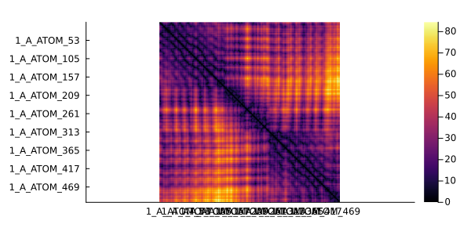
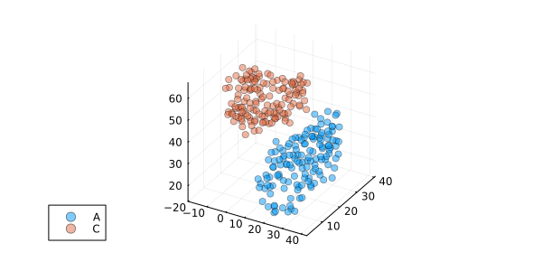

PDB
The module PDB defines types and methods to work with protein structures inside Julia. It is useful to link structural and sequential information, and needed for measure the predictive performance at protein contact prediction of mutual information scores.
using MIToS.PDB # to load the PDB moduleFeatures
- Read and parse mmCIF, PDB, and PDBML files.
- Download structures from the PDB and AlphaFold databases.
- Calculate distance and contacts between atoms or residues.
- Determine interaction between residues.
Contents
Retrieve information from PDB database
This module exports the downloadpdb function, to retrieve a PDB file from PDB database . By default, this function downloads a gzipped mmCIF file (
. By default, this function downloads a gzipped mmCIF file (format=MMCIFFile), which could be easily read by MIToS. You are able to determine the format as PDBFile if you want to download a PDB file instead.
using MIToS.PDB
pdbfile = downloadpdb("1IVO", format = PDBFile)"1IVO.pdb.gz"PDB module also exports a getpdbdescription to access the header information of a PDB entry.
getpdbdescription("1IVO")JSON3.Object{Base.CodeUnits{UInt8, String}, SubArray{UInt64, 1, Vector{UInt64}, Tuple{UnitRange{Int64}}, true}} with 4 entries:
:entry => {…
:rcsb_entry_info => {…
:rcsb_accession_info => {…
:polymer_entities => Object[{…Retrieve information from AlphaFold database
This module provides functions to download and query protein structures from AlphaFold DB.
The download_alphafold_structure function downloads the structure file, in mmCIF format by default, for a given UniProt Accession ID. You can set format to PDBFile to download a PDB file instead.
using MIToS.PDB
# Get the structure for the human insulin
file = download_alphafold_structure("P01308")"AF-P01308-F1-model_v4.cif"If you need more information about that entry, you can use the query_alphafolddb function. The query_alphafolddb function returns an JSON3.Object that works like a dictionary.
json_result = query_alphafolddb("P01308")JSON3.Object{Base.CodeUnits{UInt8, String}, SubArray{UInt64, 1, Vector{UInt64}, Tuple{UnitRange{Int64}}, true}} with 25 entries:
:entryId => "AF-P01308-F1"
:gene => "INS"
:sequenceChecksum => "C2C3B23B85E520E5"
:sequenceVersionDate => "1986-07-21"
:uniprotAccession => "P01308"
:uniprotId => "INS_HUMAN"
:uniprotDescription => "Insulin"
:taxId => 9606
:organismScientificName => "Homo sapiens"
:uniprotStart => 1
:uniprotEnd => 110
:uniprotSequence => "MALWMRLLPLLALLALWGPDPAAAFVNQHLCGSHLVEALYLVCGERGFF…
:modelCreatedDate => "2022-06-01"
:latestVersion => 4
:allVersions => [1, 2, 3, 4]
:isReviewed => true
:isReferenceProteome => true
:cifUrl => "https://alphafold.ebi.ac.uk/files/AF-P01308-F1-mo…
:bcifUrl => "https://alphafold.ebi.ac.uk/files/AF-P01308-F1-mo…
⋮ => ⋮You can access the information in the JSON3.Object using the keys. For example, to get the URL to the PAE matrix image:
pae_image_url = json_result["paeImageUrl"]"https://alphafold.ebi.ac.uk/files/AF-P01308-F1-predicted_aligned_error_v4.png"Read and parse PDB files
This is easy using the read_file and parse_file functions, indicating the filename and the FileFormat: PDBML for PDB XML files or PDBFile for usual PDB files. These functions returns a Vector of PDBResidue objects with all the residues in the PDB. To return only a specific subset of residues/atoms you can use any of the following keyword arguments:
| keyword arguments | default | returns only ... |
|---|---|---|
chain | All | residues from a PDB chain, i.e. "A" |
model | All | residues from a determined model, i.e. "1" |
group | All | residues from a group: "ATOM", "HETATM" or All for both |
atomname | All | atoms with a specific name, i.e. "CA" |
onlyheavy | false | heavy atoms (not hydrogens) if it's true |
occupancyfilter | false | only the atoms with the best occupancy are returned if it's true |
For PDBML files it is possible to use the keyword argument label to false (default to true) to get the auth_ attributes instead of the label_ attributes for chain, atom and residue name fields. The auth_ attributes are alternatives provided by an author in order to match the identification/values used in the publication that describes the structure.
# Read α carbon of each residue from the 1ivo pdb file, in the model 1, chain A and in the ATOM group.
CA_1ivo =
read_file(pdbfile, PDBFile, model = "1", chain = "A", group = "ATOM", atomname = "CA")
CA_1ivo[1] # First residue. It has only the α carbon.PDBResidue:
id::PDBResidueIdentifier
PDBe_number number name group model chain
"" "2" "GLU" "ATOM" "1" "A"
atoms::Vector{PDBAtom} length: 1
coordinates atom element occupancy B alt_id charge
1: [92.793, 69.578, 31.657] "CA" "C" 1.0 "151.39" "" ""
Looking for particular residues
MIToS parse PDB files to vector of residues, instead of using a hierarchical structure like other packages. This approach makes the search and selection of residues or atoms a little different. To make it easy, this module exports the select_residues and select_atoms functions. Given the fact that residue numbers from different chains, models, etc. can collide, we can indicate the model, chain, group, residue number and atom name using the keyword arguments of those functions. If you want to select all the residues in one of the categories, you are able to use the type All (this is the default value of such arguments). You can also use regular expressions or functions to make the selections.
using MIToS.PDB
pdbfile = downloadpdb("1IVO", format = PDBFile)
residues_1ivo = read_file(pdbfile, PDBFile)
# Select residue number 9 from model 1 and chain B (it looks in both ATOM and HETATM groups)
select_residues(residues_1ivo, model = "1", chain = "B", residue = "9")1-element Vector{MIToS.PDB.PDBResidue}:
PDBResidue:
id::PDBResidueIdentifier
PDBe_number number name group model chain
"" "9" "GLY" "ATOM" "1" "B"
atoms::Vector{PDBAtom} length: 4
coordinates atom element occupancy B alt_id charge
1: [53.449, 49.375, 55.663] "N" "N" 1.0 "28.86" "" ""
coordinates atom element occupancy B alt_id charge
2: [52.736, 49.613, 54.425] "CA" "C" 1.0 "65.57" "" ""
coordinates atom element occupancy B alt_id charge
3: [52.382, 48.332, 53.719] "C" "C" 1.0 "21.73" "" ""
coordinates atom element occupancy B alt_id charge
4: [53.261, 47.591, 53.294] "O" "O" 1.0 "79.88" "" ""
Getting a Dict of PDBResidues
If you prefer a Dict of PDBResidue, indexed by their residue numbers, you can use the residuedict function.
# Dict of residues from the model 1, chain A and from the ATOM group
chain_a = residuesdict(residues_1ivo, model = "1", chain = "A", group = "ATOM")
chain_a["9"]PDBResidue:
id::PDBResidueIdentifier
PDBe_number number name group model chain
"" "9" "GLY" "ATOM" "1" "A"
atoms::Vector{PDBAtom} length: 4
coordinates atom element occupancy B alt_id charge
1: [109.607, 71.943, 41.924] "N" "N" 1.0 "50.08" "" ""
coordinates atom element occupancy B alt_id charge
2: [109.641, 73.162, 42.7] "CA" "C" 1.0 "62.78" "" ""
coordinates atom element occupancy B alt_id charge
3: [110.753, 73.103, 43.722] "C" "C" 1.0 "23.60" "" ""
coordinates atom element occupancy B alt_id charge
4: [110.778, 72.21, 44.568] "O" "O" 1.0 "83.70" "" ""
Select particular residues
Use the select_residues function to collect specific residues. It's possible to use a single residue number (i.e. "2") or even a function which should return true for the selected residue numbers. Also regular expressions can be used to select residues. Use All to select all the residues.
residue_list = map(string, 2:5)
# If the list is large, you can use a `Set` to gain performance
# residue_set = Set(map(string, 2:5))4-element Vector{String}:
"2"
"3"
"4"
"5"first_res = select_residues(
residues_1ivo,
model = "1",
chain = "A",
group = "ATOM",
residue = resnum -> resnum in residue_list,
)
for res in first_res
println(res.id.name, " ", res.id.number)
endGLU 2
GLU 3
LYS 4
LYS 5A more complex example using an anonymous function:
# Select all the residues of the model 1, chain A of the ATOM group with residue number less than 5
first_res = select_residues(
residues_1ivo,
model = "1",
chain = "A",
group = "ATOM",
residue = x -> parse(Int, match(r"^(\d+)", x)[1]) <= 5,
)
# The anonymous function takes the residue number (string) and use a regular expression
# to extract the number (without insertion code).
# It converts the number to `Int` to test if the it is `<= 5`.
for res in first_res
println(res.id.name, " ", res.id.number)
endGLU 2
GLU 3
LYS 4
LYS 5Select particular atoms
The select_atoms function allow to select a particular set of atoms.
# Select all the atoms with name starting with "C" using a regular expression
# from all the residues of the model 1, chain A of the ATOM group
carbons = select_atoms(
residues_1ivo,
model = "1",
chain = "A",
group = "ATOM",
residue = All,
atom = r"C.+",
)
carbons[1] coordinates atom element occupancy B alt_id charge
[92.793, 69.578, 31.657] "CA" "C" 1.0 "151.39" "" ""
Protein contact map
The PDB module offers a number of functions to measure distances between atoms or residues, to detect possible interactions or contacts. In particular the contact function calls the distance function using a threshold or limit in an optimized way. The measure can be done between alpha carbons ("CA"), beta carbons ("CB") (alpha carbon for glycine), any heavy atom ("Heavy") or any ("All") atom of the residues.
In the following example, whe are going to plot a contact map for the 1ivo chain A. Two residues will be considered in contact if their β carbons (α carbon for glycine) have a distance of 8Å or less.
using MIToS.PDB
pdbfile = downloadpdb("1IVO", format = PDBFile)
residues_1ivo = read_file(pdbfile, PDBFile)
pdb = select_residues(residues_1ivo, model = "1", chain = "A", group = "ATOM")
dmap = distance(pdb, criteria = "All") # Minimum distance between residues using all their atoms511×511 Named PairwiseListMatrices.PairwiseListMatrix{Float64, false, Vector{Float64}}
Res1 ╲ Res2 │ 1_A_ATOM_2 1_A_ATOM_3 … 1_A_ATOM_511 1_A_ATOM_512
─────────────┼──────────────────────────────────────────────────────────
1_A_ATOM_2 │ 0.0 1.32963 … 48.112 52.4859
1_A_ATOM_3 │ 1.32963 0.0 42.5701 46.9381
1_A_ATOM_4 │ 3.90659 1.32843 44.8597 49.0519
1_A_ATOM_5 │ 7.48169 4.45375 45.0295 48.9502
1_A_ATOM_6 │ 8.56892 7.00906 41.7069 45.8367
1_A_ATOM_7 │ 12.7101 10.681 42.7762 46.6884
1_A_ATOM_8 │ 15.8327 13.7432 38.2741 42.2592
1_A_ATOM_9 │ 17.6834 16.0752 43.4541 47.2341
⋮ ⋮ ⋮ ⋱ ⋮ ⋮
1_A_ATOM_505 │ 48.2444 42.6696 5.52601 5.34234
1_A_ATOM_506 │ 49.1067 43.611 3.27264 3.18892
1_A_ATOM_507 │ 51.003 45.5613 4.57506 5.21453
1_A_ATOM_508 │ 50.1635 44.8346 5.83251 8.07726
1_A_ATOM_509 │ 47.1567 41.8096 4.63848 7.9661
1_A_ATOM_510 │ 49.0161 43.6277 1.3263 3.96007
1_A_ATOM_511 │ 48.112 42.5701 0.0 1.32624
1_A_ATOM_512 │ 52.4859 46.9381 … 1.32624 0.0Use the contact function to get a contact map:
cmap = contact(pdb, 8.0, criteria = "CB") # Contact map511×511 Named PairwiseListMatrices.PairwiseListMatrix{Bool, false, Vector{Bool}}
Res1 ╲ Res2 │ 1_A_ATOM_2 1_A_ATOM_3 … 1_A_ATOM_511 1_A_ATOM_512
─────────────┼──────────────────────────────────────────────────────────
1_A_ATOM_2 │ true true … false false
1_A_ATOM_3 │ true true false false
1_A_ATOM_4 │ true true false false
1_A_ATOM_5 │ false false false false
1_A_ATOM_6 │ false false false false
1_A_ATOM_7 │ false false false false
1_A_ATOM_8 │ false false false false
1_A_ATOM_9 │ false false false false
⋮ ⋮ ⋮ ⋱ ⋮ ⋮
1_A_ATOM_505 │ false false false false
1_A_ATOM_506 │ false false true true
1_A_ATOM_507 │ false false false false
1_A_ATOM_508 │ false false false false
1_A_ATOM_509 │ false false false false
1_A_ATOM_510 │ false false true true
1_A_ATOM_511 │ false false true true
1_A_ATOM_512 │ false false … true trueusing Plots
gr()
heatmap(dmap, grid = false, yflip = true, ratio = :equal)
heatmap(cmap, grid = false, yflip = true, ratio = :equal)
Structural superposition
using MIToS.PDB
pdbfile = downloadpdb("2HHB")
res_2hhb = read_file(pdbfile, MMCIFFile)
chain_A = select_residues(res_2hhb, model = "1", chain = "A", group = "ATOM", residue = All)
chain_C = select_residues(res_2hhb, model = "1", chain = "C", group = "ATOM", residue = All)
using Plots
gr()
scatter3d(chain_A, label = "A", alpha = 0.5)
scatter3d!(chain_C, label = "C", alpha = 0.5)
superimposed_A, superimposed_C, RMSD = superimpose(chain_A, chain_C)
RMSD0.23000472638958339scatter3d(superimposed_A, label = "A", alpha = 0.5)
scatter3d!(superimposed_C, label = "C", alpha = 0.5)